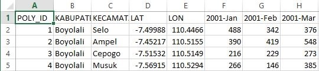
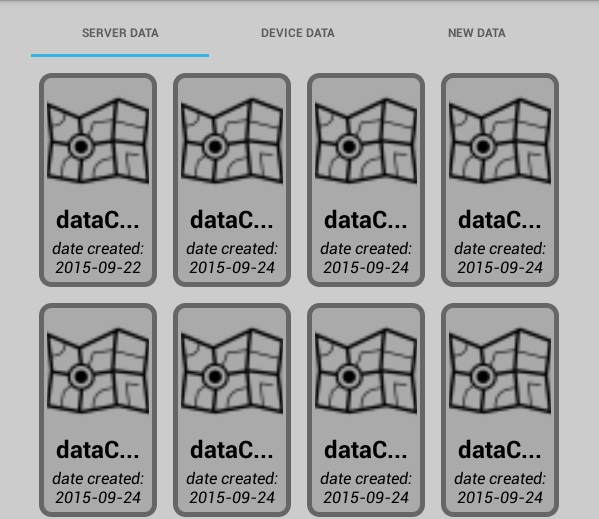
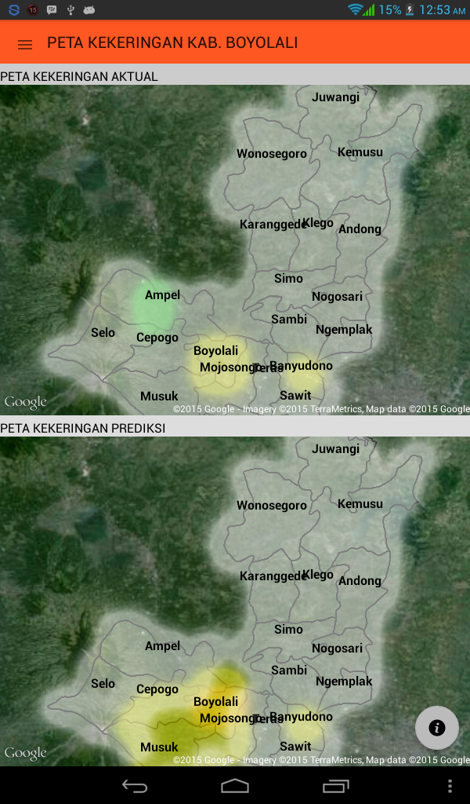
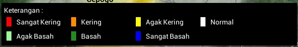
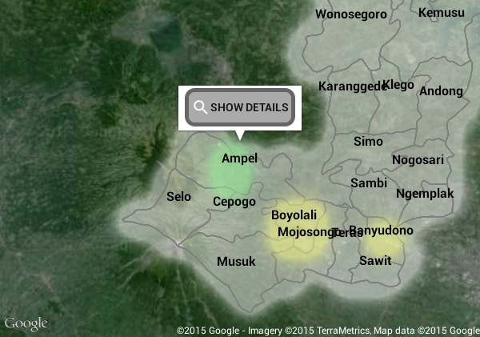
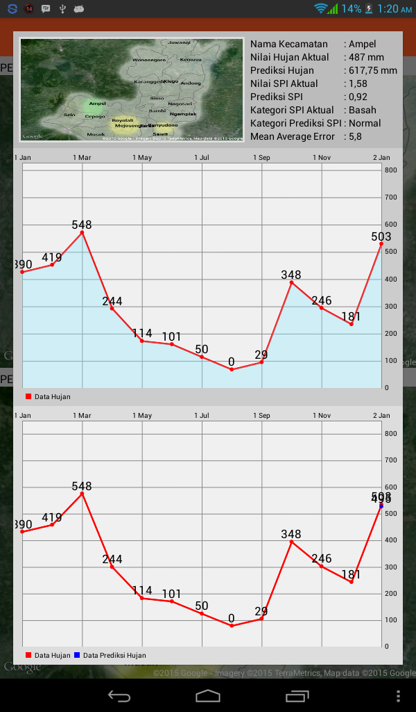

Aplikasi ini dibuat untuk memenuhi syarat kelulusan dalam mendapatkan gelar Sarjana di Fakultas Teknologi Informasi Universitas Kristen Satya Wacana.
Aplikasi ini dibuat untuk membantu dalam proses pemetaan daerah kekeringan wilayah Kabupaten Boyolali. Dalam melakukan proses pemetaan aplikasi membutuhkan data curah hujan pada setiap kecamatan di wilayah Kabupaten Boyolali yang tercatat secara bulanan yang disimpan dengan format file berekstensi ".csv".
Struktur file dibuat dengan bentuk seperti gambar diatas. Penggunaan data pada kolom nama Kabupaten digunakan untuk menjelaskan bahwa data yang digunakan merupakan data pada wilayah Kabupaten Boyolali. Penggunaan pada kolom nama Kecamatan digunakan untuk menjelaskan bahwa data pada baris tersebut merupakan data curah hujan bulanan pada kecamatan tersebut. Penggunaan data pada kolom LAT dan LON menjelaskan bahwa data curah hujan bulanan pada kecamatan tersebut di pantau pada koordinat tertentu. Penggunaan data pada kolom selanjutnya merupakan data curah hujan bulanan yang sudah tercatat dimulai dari bulan Januari dengan panjang minimal data yang ada yaitu sebanyak 2 periode atau data curah hujan bulanan yang sudah tercatat selama 2 tahun.
Ikuti langkah-langkah berikut ini untuk memulai proses pemetaan :
-
Ketika aplikasi pertama kali terbuka akan mencoba melakukan koneksi dengan server, untuk itu pastikan perangkat anda sudah terkoneksi dengan internet baik melalui jaringan ponsel atau melalui jaringan wifi.
-
Tekan tombol "START" pada bagian bawah untuk memulai proses pemetaan, dan tekan tombol "ABOUT" untuk mendapatkan informasi lebih lanjut mengenai aplikasi pemetaan ini.
-
Terdapat 3 pilihan menu, yaitu "SERVER DATA", "DEVICE DATA, dan "NEW DATA". Pilihan "SERVER DATA" merupakan pilihan dimana pengguna dapat mendownload data peta yang tersimpan pada server, sedangkan pilihan "DEVICE DATA" merupakan pilihan dimana pengguna dapat membuka kembali data peta yang sudah tersimpan didalam perangkat, dan pilihan "NEW DATA" merupakan pilihan dimana pengguna dapat memasukkan data baru sebagai sumber data untuk membuat data peta yang baru.
 -
Setelah membuat pilihan dan proses pemetaan telah berhasil maka akan terbuka jendela baru yang membuat hasil pemetaan. Terdapat 2 peta yang muncul yaitu "PETA KEKERINGAN AKTUAL" dan "PETA KEKERINGAN PREDIKSI". "PETA KEKERINGAN AKTUAL" merupakan peta yang menggambarkan tingkat kekeringan suatu daerah berdasarkan data curah hujan terakhir dengan kategori kekeringan tertentu berdasarkan nilai indeks kekeringan SPI (Standarized Precipitation Index). "PETA KEKERINGAN PREDIKSI" merupakan peta yang menggambarkan tingkat kekeringan suatu daerah berdasarkan hasil prediksi sistem dengan kategori kekeringan tertentu berdasrakan nilai indeks kekeringan SPI (Standarized Precipitation Index).
 -
Peta kekeringan wilayah Kabupaten Boyolali digambarkan berdasarkan kode warna tertentu dimana masing-masing warna merupakan hasil pengelompokan dari nilai indeks kekeringan SPI (Standarized Precipitation Index). Untuk mengetahui arti dari masing-masing warna tersebut pengguna dapat menekan tombol
 disebelah kanan bawah
layar yang dapat dilihat pada gambar dibawah dengan lingkaran warna merah.
disebelah kanan bawah
layar yang dapat dilihat pada gambar dibawah dengan lingkaran warna merah.
Setelah tombol ditekan akan menampilkan informasi mengenai pengelompokan warna berdasarkan nilai indeks SPI (Standarized Precipitation Index).
 -
Untuk menampilkan informasi lebih lengkap mengenai kondisi kekeringan pada suatu daerah pengguna dapat meng-klik label nama suatu wilayah yang akan memunculkan tombol untuk menampilkan informasi lengkap tentang daerah tersebut seperti ditunjukkan pada gambar dibawah ini.
Informasi yang ditampilkan meliputi "Nilai Hujan Aktual" dan "Nilai Hujan Prediksi", "Nilai SPI Aktual" dan "Nilai SPI Prediksi", "Kategori SPI Aktual" dan "Kategori SPI Prediksi", serta "Mean Average Error" hasil prediksi nilai curah hujan untuk mengukur ketepatan nilai hasil prediksi (semakin mendekati 0 semakin baik).
